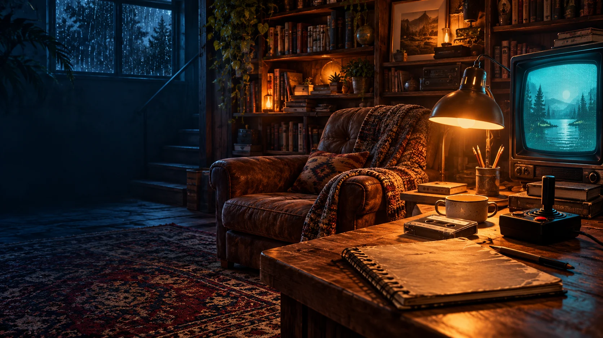

AN ORIGINAL CLUBHOUSE MINI-ADVENTURE
Lost & Found: 1985
A room full of old things. An unfinished mixtape. Find the pencil, follow the clues, and give Side B a beginning.

A FICTIONAL ROOM. A FAMILIAR FEELING.THE DISCOVERY NOTEBOOK
Somebody left Side B blank.
The cassette is tangled. The pencil on the desk looks useful. Select an object to take a closer look.
What order belongs on the tape?
Use the clues. Choose the four words in order.
SIDE B: STILL YOURS
The best bit
hasn't been recorded yet.
The tape clicks into place. A note slips from the case:
“Keep the good stuff. Make room for the next thing.”
Memory found. Curiosity intact. Now go make something—even if the first version is a bit of a mess.
An original fictional game for the clubhouse, not an event from the memoir. Keyboard: Tab and Enter. On a phone, tap the labeled objects. Progress stays in this browser.